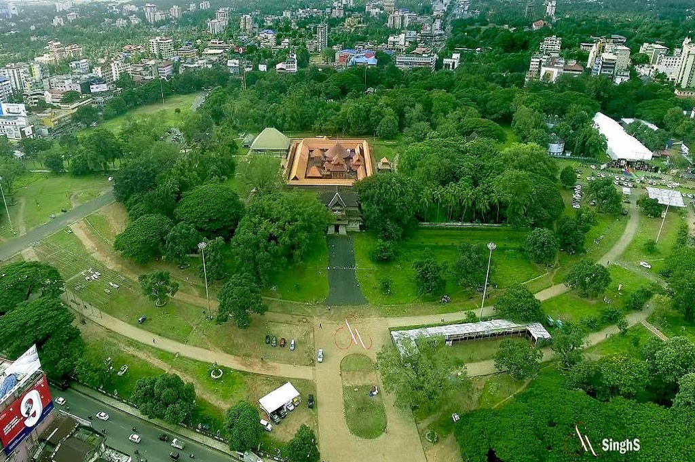
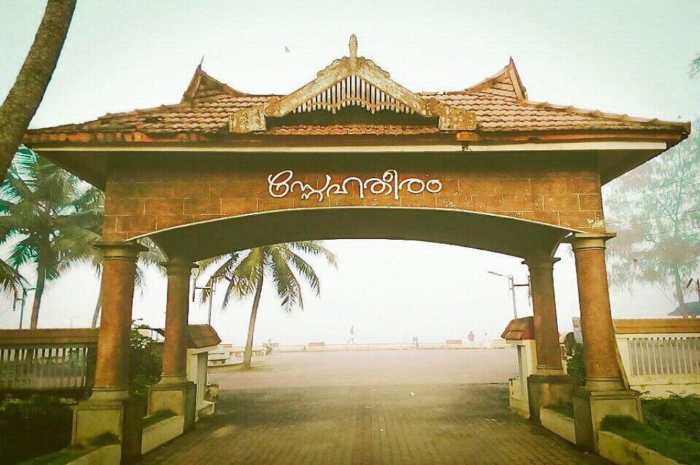
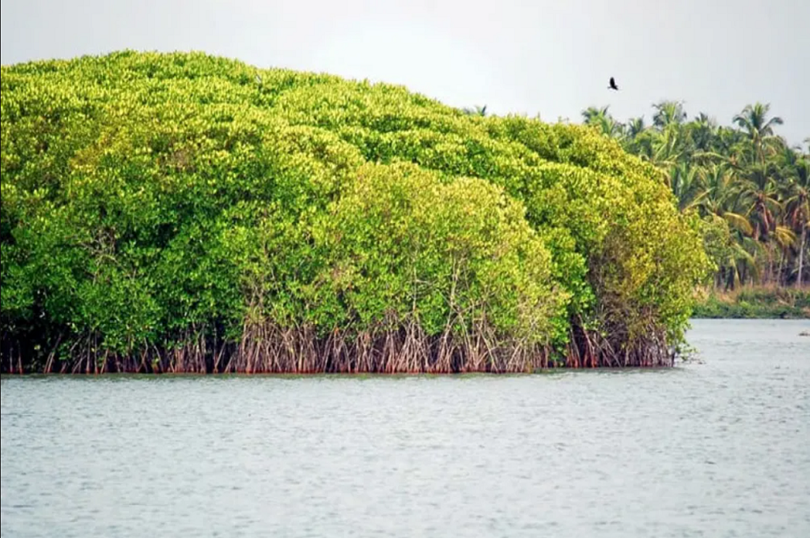
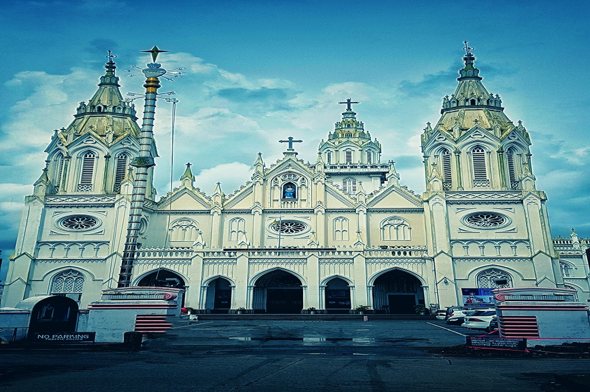

POINTS OF INTEREST

SWARAJ ROUND
Swaraj Round or Thrissur Round is the local name for circular road in the centre of the city of Thrissur.

SNEHATHEERAM BEACH
A hidden beach in Kerala, Snehatheeram Beach boasts of its pristine beauty and alluring charm.

CHETTUVA BACKWATERS
Witness the surreal beauty, experience the tranquillity, and enjoy the alluring charm of the backwaters.

PEECHI WILDLIFE SANCTUARY
Nature lovers can embark on wildlife safaris within this reserve forest and enjoy its fascinating beauty.

OUR LADY OF DOLOURS BASILICA
Built in 1814, it is a important religious site among the Christians in God’s Own Country.